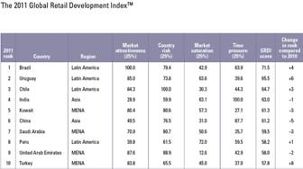
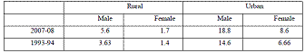

Foreign Direct Investment In Indian Retail Sector
Drawing lessons from the international experience
Abstract
The initiative of Indian Government to allow 100% FDI in single brand retailing and 51% in multi brand retailing has, with a few affirmations, raised many eye brows. Is it re-colonization in the post independence era or a class struggle in the words of Karl Marx? This paper attempts at studying the economic effect of ‘FDI in retail’ on various sectors of the economy drawing the cue from the experiences of other nations. Will the domestic manufacturers compete and evolve or get marginalized? Will employment level improve as big retailers come in or worsen because of the disappearance of the ‘kirana’ stores? Will the farmers benefit due to elimination of intermediaries or become a captive supply base to foreign retailers? And the most intriguing question is what is more important for economic development, GDP or GNP?
Author:
Neha Verma
Assistant Professor, Department of Economics,
Sri Guru Gobind Singh College of Commerce, DU
Delhi, India
Paper Transcript of Paper Titled :
Foreign Direct Investment In Indian Retail Sector
Drawing lessons from the international experience
Foreign Direct Investment In Indian Retail Sector
Drawing lessons from the international experience
Neha Verma
Assistant Professor, Department of Economics,
Sri Guru Gobind Singh College of Commerce, DU
Delhi, India
Abstract: The initiative of Indian Government to allow 100% FDI in single brand retailing and 51% in multi brand retailing has, with a few affirmations, raised many eye brows. Is it re-colonization in the post independence era or a class struggle in the words of Karl Marx? This paper attempts at studying the economic effect of ‘FDI in retail’ on various sectors of the economy drawing the cue from the experiences of other nations. Will the domestic manufacturers compete and evolve or get marginalized? Will employment level improve as big retailers come in or worsen because of the disappearance of the ‘kirana’ stores? Will the farmers benefit due to elimination of intermediaries or become a captive supply base to foreign retailers? And the most intriguing question is what is more important for economic development, GDP or GNP?
Keywords: Indian Retail, single brand retail, multi brand retail, Foreign Direct Investment, FDI in retail
I. Introduction
The retail sector is the backbone of any economy, determining its growth trajectory in a big way. India is Asia’s largest retail market after China and Japan and retail is one of the largest employers in India. The sector has evolved dramatically from traditional village fairs, street hawkers to resplendent malls and plush outlets, growing from strength to strength. The retail sector in India includes a variety of product lines like food retailers, health and beauty products, clothing and footwear, home furniture & household goods, durable goods and leisure & personal goods. The food, beverage and clothing segment occupy the largest share and are growing exponentially. In 2010, the Indian retail market was valued at $435 billion of which the share of modern retail was 7 per cent. The sector is expected to grow to $535 billion by 2013 with the share of modern retail at 10 per cent (ICRIER, 2011)
The Indian Government has given green signal to 51% FDI in multi brand retailing and 100% FDI in single brand retailing. This initiative by the government has, with a few affirmations, raised many eye brows. The case for FDI is often made on the basis of increase in employment, wider choices to consumers at a lower price, a push to domestic industry because of better competition and development of modern supply chains in India. But the story is far beyond it. There are a number of stakeholders - farmers, low income consumers, agricultural intermediaries, the mom and pop stores and the domestic manufacturers at large who are expected to lose from this policy.
A vast literature has emerged on the opportunities and challenges of this policy. However, none of the papers have taken up an inter country comparison of the issue in detail. This paper attempts at studying the economic effect of ‘FDI in retail’ on various sectors of the economy drawing the cues from the experiences of other nations. The paper is divided in six sections. Section I gives an overview of the present state of the Indian retail industry. Section II explains the proposed ‘FDI in retail’ policy in detail. Section III will discuss the experience of other nations with respect to allowing FDI in the retail sector. Section IV discusses the million dollar question that ‘Is FDI in retail more bad than good for India?’ This section will take a look at various benefits and costs attached to the policy building upon the lessons learned from the experience of other nations. Section V will talk about the recommendations and concludes the paper.
II. Indian Retail Sector, Opportunities Untapped
Retailing in India is slightly different from that in the developed nations, in that it is divided in organized and unorganized sectors. Organized retail is described as the one where trading is taking place under a license or through the people who are registered under sales tax or income tax. On the other hand, the unorganized sector in India is more traditional style which includes the local mom and pop stores (kirana stores), owner managed general stores, paan/beedi shops, convenience stores, hand carts and street vendors. The organized retail in India accounts for a mere 4%of the total market (2008) while in China it is 20% and 40% in Thailand. This presents a clear indication that the organized retail sector in India has immense untapped opportunities.
A.T. Kearney’s study on global retailing trends in the world found that India is least saturated and least competitive of all major global economies. A. T. Kearney prepares a Global Retail Development Index (GRDI) annually, in which in ranks the top 30 emerging economies for retail development and identifies the opportunities presented by these countries for the global retailers. In the 2011 GRDI tabulation, India ranks as the fourth hottest market for retail development, leaving behind China. The Global Retail Development Index details are presented in table I.
Table I

Source: A.T. Kearney’s Global Retail Development Index 2011
The small share of Indian organized retail in the total market share makes it quite vulnerable. The competition is less and so are the barriers to enter for players trying to setup base in India. A.T. Kearney’s 2011 report states that global retailers such as Walmart, Carrefour, Tesco and Casino would take advantage of the more favorable FDI rules that are likely in India and enter the country through the partnerships with local retailers. It further states that a good talent pool, unlimited opportunities, huge markets and availability of quality raw materials at cheaper costs is expected to make India overtake the world’s best retail economies by 2042, according to industry players. In table A, it is evident that the urgency to enter the Indian market for the global players is 100%, making the case for the entry of FDI in the sector.
The Indian retailer sector is divided in three segments, ‘single brand retail’, ‘multi brand retail’ and ‘cash and carry’ which refer to wholesale retail. In 1997, FDI in cash and carry (wholesale) with 100 percent ownership was allowed under the Government approval route. It was brought under the automatic route in 2006. Wal -mart has already entered this market with a joint venture with Bharti. 100% foreign investment in single brand retailing and 51% FDI in multi brand retailing are permitted in 2012. The organized retail sector in India is at its nascent stage. There are department stores like Shopper’s Stop, Ebony, Piramyd and Globus, Supermarkets like Subhiksha, Vitan, Food World and the own brand store like Pantaloon. But unfortunately, the Indian Supermarket experience has not been so pleasant. The retail chains buy only ‘A’ grade produce and that to only a part of it. Farmers have to approach mandis for the sale of rest of the produce. Recent studies reveal that these chains led to no improvement in the supply chain efficiency and buy from a few resourceful contract farmers without any promise or contract to buy regularly. These stores have miserable performance e.g. Subhiksha, More, Spencer’s. Bangalore has highest supermarket penetration and the kirana stores have suffered badly. In the present scenario the supermarkets have only informal arrangements with growers instead of contract farming. The supermarkets are unwilling to share the risk of the growers. They give the market-price based prices to the farmers who have to bear the risk of price fall in the market (Singh, Sukhpal 2010).
The capital infusion and improvement of the supply chain can boost the performance of these supermarkets and hypermarkets. Moreover, the nascent stage of organized retail sector in India makes it the premier choice for investment by foreign players.
III. Foreign Direct Investment In Indian Retail Sector, The Road Ahead
The Indian Government has opened up the retail sector for foreign players given that it is bursting with opportunities to explore. Though there is 100% FDI permitted in the cold chain sector but FDI opening in single and multi brand retailing is expected to yield much better results. Moreover, there is less consolidation in retail sector, weaker competition and an ever growing middle class with a large appetite for consumer goods and services. The current FDI in retail policy of Indian Government is being discussed below
- 51% FDI permitted in the multi brand retailing. The unbranded products are allowed for agricultural produce like fruits, vegetables, flowers, grain, pulses, fish and meat.
- Minimum investment to be brought in, as FDI, by the foreign investor would be US $100 million.
- FDI is not likely under the automatic route implying that FIPB approval is needed on case by case basis.
- 50% investment should be done at improving the back-end infrastructure. Back-end infrastructure will include investment made towards processing, manufacturing, distribution, design improvement, quality control, packaging, logistics, storage, ware-house, agriculture market produce infrastructure etc.
- 30% of the raw materials should be procured from small and medium enterprises (SMEs).
- Permission to set up stores only in cities with a minimum population of 1 million which is 53 cities in India according to 2011 census.
- Government has the first right to procure materials from the farmers.
- While the proposals for FDI will be sanctioned by the Centre, approvals from each State Government will be required.
- Retail trading, in any form, by means of e-commerce, would not be permitted, for companies with FDI, engaged in the activity of multi brand retailing.
The criticism on the policy is pervasive. It is expected to make the situation worse for farmers, small agricultural intermediaries, mom and pop stores, small manufacturers and the consumers at large by raising food inflation. It is anticipated to be recolonization in the post independence era. But the proponents of the policy term this protest a dialectic one. There has always been agitation and resistance when the economy changes its paradigm. Karl Marx called it dialectical materialism and so has been observed in the case of this policy. The Government is supporting the FDI in retail on the premise that it will create jobs, the prices will come down, the supply chain will see a massive investment and improvement and the suppliers will improve due to tougher competition.
To understand the implication of FDI in retail in the Indian market, this paper studies the experience of other nation on the same front. The positive impact of organized retailing could be seen in USA, UK, and Mexico and also in China. It is also important to understand that Argentina, China, Brazil, Chile, Indonesia, Malaysia, Russia, Singapore and Thailand have allowed 100% FDI in multi brand retail. These countries benefited immensely from it. Also small retailers co-exist. The quality of the services has also increased. The next section takes into account the experience of following countries to draw some lessons for India:
- Malaysia, to study the impact on retailers and consumers;
- China, to study the effect on the economic growth at large;
- Mexico, to study the plight of small producers post opening of FDI;
- Romania, to take into account the effect on the total factor productivity of the supplying industries;
- Thailand, to study the effect of big retailers on small retailers;
- South Africa to look at the impact on the employment level of the nation; and
- Russia to study the impact of FDI in retail on the supply chain management.
IV. Case of Mexico
Is Walmart modernizing retail at a price of creating a captive supply base? Walmart entered Mexico in 1991 and by 1997 Walmart took major control of the Mexico retail sector by becoming Walmex. The paper being reviewed in this section is the 2009 version of a study by World Bank, University of Oxford, University of Colorado, NBER, CEPR and Penn State University. The study has focused on the impact of the entry of giant retailer Walmart on the innovation and industry productivity of the Mexican economy. The major stakeholder emerging with the entry of a big retailer in the market is the small producer or supplier. The growing dominance of Walmart on Mexico led to two phenomenal changes in the economy: modernization of warehousing, distribution and inventory management and it changed the way it interacted with the suppliers.
A. Modernization of supply chain
Walmart opened the Mexican economy to larger markets, both nationally and in terms in increasing export opportunities. Overall the retail industry saw a rise in the productivity. The innovations imported from US by Walmart have helped Mexico modernize its supply chain. The warehousing, distribution and inventory management sectors have witnessed growth post retail liberalization. Since 1997, a severe decrease in the purchases/sales ratio has been observed especially in the case of Walmart. An explanation for this could be the reorganization of the supply chain. By increasing their centralized-distribution capacities, retailers may have internalized one part of the distribution service that is no more paid to suppliers. In 1999, 80 % of the products sold in Wal-Mart stores were distributed by its own distribution centers when at the same time that was only the case for 13% of Gigante’s products and less than 20% of Commercial Mexicana’s.
B. Creating a captive supply base
On one hand, Walmart has modernized the Mexican retail sector while on the other it has clearly imposed a tight squeeze on domestic retailers through its extraordinary bargaining powers. Walmart continually demands its suppliers to improve quality of the product and lower price and sometimes the combination of both. Walmart enters in an agreement with its suppliers which requires regular R&D operations to upgrade the technology. Moreover, it has been observed by the researchers that Walmart demand a logistics discount from the suppliers on the grounds of reduced distribution costs. These factors collectively have reduced the mark up of the suppliers. The pricing decisions are more or less driven by Walmart and the squeeze is real and quantitatively very important as observed by the authors of the referred paper. The growing market power of buyers (WalMart and Sinergia) increases the cross regional competition, requires a minimum provider scale and tends to deteriorate the capacity of providers’ negotiation who have to accept very unfavorable prices or payment conditions. For example, Wal-Mart is used to pay its providers at a 120 days term but also to ask them to give for free an initial stock when Wal-Mart opens a new store (Durand, 2005). Global retailers have the option of importing goods than purchasing locally which increases their bargaining power. In 2003 Wal-Mart was not only number 6 on the list of the main importers in Mexico given by Expansión but also the greatest contributor to the Mexican commercial deficit. It has been observed since 1997 that a process of intensification of imports in absolute and relative terms by modern retailers as well as Wal-Mart’s has proportionally a higher share of imports than the local firms. This growing pressure of imports due to the increasing global sourcing of modern retailers is one of the most relevant consequences of FDI for local suppliers (Durand, 2005). Exit of low appeal product suppliers has been observed and the medium appeal product suppliers get quality adjusted price which lowers their mark up to exceptionally low levels.
C. Opportunities explored for domestic suppliers
The entry of Walmart in Mexico has been a mixed blessing. Walmart has provided the domestic suppliers with a wider market both nationally and across borders which made them shift towards Walmart from the local retailers. The suppliers have emerged as national suppliers, supplying under the Walmart brand or under their own brand in some cases. The technology upgradation and innovations has been a route to suppliers to escape the mandatory price cuts which Walmart demands. For instance, Mexican-owned detergent producers have reported introducing incremental improvements to their products in order to avoid drastic price cuts demanded by Wal-Mart (Javorcik et al. 2006). There has been a positive impact on the productivity of high appeal products and on the wages of the workers in the top establishments.
The Mexican experience has been studied only from the perspective of Walmart’s entry but it has helped understand the dynamics behind entry of big retailers, especially the impact on domestic supplying industry. The suppliers face a tough tradeoff, increase in market size and export opportunities being offered versus the low mark up and high innovation cost regime imposed by Walmart! The growing pressure of imports and the increasing power of big retailers are expected to lead to elimination of some local providers and a concentration process in the supply chains with a risk of miserable growth for the surviving firms.
V. Case of Malaysia: Different Retailers affected differently and Consumers becoming cosmopolitan
The paper being reviewed in this section studies the impact of ‘FDI in retail’ on local retailers in Klang Valley, Malaysia (2008). The case of Malaysia presents an interesting insight. There is a widespread belief that different types of retail businesses will be affected differently by the presence of the large scale retail outlets (Stone, 1988, 1995 and 1997; Peterson and McGee, 2000; Brennan and Lundsten, 2000; Artz and Stone 2006). The Malaysian case confirms with the study of Stone. The study done by the authors suggested that the retailers selling complementary goods in relation to the products offered by international retailers, benefitted from their entry in the economy and they favoured their location near their business area as it will attract more customers to the area. On the other hand, the retailers offering similar products were against the location of these big stores near their business areas. It has been observed that there is a strong link between the entry of big retailers and the deterioration of the local businesses.
Retail sector of Malaysia was characterized by large number of small stores offering only limited variety of goods and services. As retail sector went under rapid transformation with liberalization of FDI, the small traditional shops were complemented by large departmental stores and supermarkets offering a wide range of merchandise and services. The entry of foreign players benefitted the economy at large and the consumers became more affluent and mobile. Malaysian consumer lifestyle has been evolving and changing due, in part, to rising affluence and education. High profile international retailers and the global mass media has also played a role in changing consumer shopping pattern. They are becoming more affluent and cosmopolitan. They have moved from a simple need of sustenance to key leisure items like health, beauty, lifestyle and fitness. Impressive growth has been observed in the economy attracting major international retailers like Makro, Carrefour, Tesco, Giant, Jaya Jusco, Courts Mammoth etc into the economy (Kaliappan, Alavi, Abdullah, Zakaullah, 2008)
VI. Case of Romania: Enhanced Total Factor Productivity of the Suppliers
The expansion of global retail chains in Romania has led to a significant increase in the total factor productivity of the supplying firms. It has been observed that their presence in a region increases the total factor productivity of firms by 15.2 percent and doubling the number of chains leads to a 10.8 percent increase in total factor productivity. However, the expansion benefits larger firms the most and has a much smaller impact on small enterprises (Javorcik, Li). The local firms and producers benefitted from the knowledge spillover from the big retailers. Swinnen (2006) documented a detailed picture of how FDI in retail sector in some Central and Eastern European countries led to a productivity growth of the local diary farmers.
The best international practices and the advanced retail technologies of the global chains helped the domestic firms to lower their costs. The computerized inventory systems being used by global chains made the suppliers better informed about the demand levels in the market. For instance, Wal-Mart provides its suppliers with full and free access to real-time data on how their products are selling. Suppliers can plan production runs earlier and offer better prices (Economist 2001). Tesco tracks every purchase through its Club card and can use this information to help its private-label suppliers to test and adapt innovations (The Boston Consulting Group 2007).
VII. Case of Russia
A. FDI modernizing the supply chain management
Russia represents one of the fastest growing economies in the Central and Eastern Europe. The supermarket revolution in Russia occurred in the 2000s. In 2002, sales by the top-15 chains totaled US$2.7 billion; by 2006, sales by those chains had soared to US$19.2 billion. The share of the top-3 chains was 40 per cent in 2002 and 54 per cent in 2006, with the lead domestic chains acquiring many small regional and local chains. The foreign share of sales was 33 per cent in 2002 and 35 per cent in 2006-only inching up and spreading over 8 foreign chains among the top 15 (Department of Industrial Policy and Promotion (DIPP), 2010). The supply chain in Russian retail sector consists of the agricultural producers, followed by the food processing industries and the retailers and wholesalers and then the product reaches the consumer for final consumption. The foreign direct investment in Russia’s retail sector has had an influence at all the management levels of the supply chain. The food processing industry has international players like Danone, Mars, Campina etc. The retail trade has Metro (cash and carry) and Auchan (hypermarkets) as the international retailers. Auchan established itself in Russia as an international retailer in the year 2002 and it ranked fourth in the top 10 food retailers in Russia according to 2007 survey with an annual turnover of $3400 million (Belaya, Hanf, 2009).
B. Agricultural Production
As has been observed in the case of Walmex, the international retailers are rigid in terms of regular quality upgradation and price reductions. The standards required by the suppliers are thus acting as an incentive for them to work towards innovation and upgradation. Agricultural producers have to comply by the new standards of the international retailers in order to stay in the supply chain.
There is a growing interaction between the farmers and the foreign processors and retailers which change their old techniques and make them accustomed to the new and improved business practices.
C. Food Processing and retail trade
The foreign retailers and processors impose all elements of the Western supply and quality chain management in Russian retail sector. The foreign food processors have even established plants in Russia to produce the international brands and the retailers’ own brands. This is what actually the proponents of FDI in retail claim that allowing foreign players in the retailing sector attracts them to improve the supply chain in the nation too. For instance, FDI in cold chain is allowed to 100% through automatic route but it is not significant in the absence of retailing.
VIII. China Witnessing Growth, Thailand and South Africa Tackling Job Losses
The retail trade in China has been growing since 1992. The foreign ownership restrictions have been progressively lifted and following the China’s accession to WTO, effective December 2004, there are no equity restrictions. Over 600 hypermarkets were opened between 1996 and 2001. The number of small outlets (equivalent to kiranas) increased from 1.9 million to over 2.5 million. Employment in the retail and wholesale sector increased from 28 million people to 54 million people between 1992 and 2001. China has registered impressive growth by the entry of the foreign players. The organized retail has led to robust economic growth and the growing incomes of the rural and urban sectors have raised the consumption levels. This creates an environment which is conducive for the further growth of retail trade. (DIPP, 2010)
Thailand is known as a country where the local retailers suffered immensely because of the entry of the foreign players. Prior to 1997, no foreign investment was allowed and small family owned stores dominated the Thai market. After the Asian crisis of 1997, it permitted the foreign capital in retail. Currently, there is 100% foreign equity allowed with no limit on the number of outlets. As the economy was already recovering from a recession when the foreign players entered, the local retailers got very easily marginalized. The international retailers expanded their operations significantly and the local players were forced to shut down their business (ICRIER, 2008). The entry affected all segments of the market – wholesalers, manufactures and the domestic retailers. On the other hand, the agro processing industry of Thailand witnessed growth and foreign retailers created networks for the exports of the Thai made goods. FDI in retail developed the organized retailing in Thailand but at a price of the demise of a large chunk of local retailers.
UNI Global Union along with its South African affiliate, The South African Allied Commercial, Catering and Allied Workers Union (SACCAWU) have highlighted the poor impact of FDI in retail on the employment levels of South Africa, focusing primarily on the effect of Walmart. Walmart’s entry in South Africa has resulted in significant job losses in the retail sector. The Walmart’s poor record in labour relations and protection of workers has been a major reason for its opposition. Bones Skulu, General Secretary, SACCAWU said, “India should beware of Walmartisation. Over the winter we saw South African supermarket chain Pick n Pay cut more than 3000 jobs as it prepares to compete with Walmart Protection of workers in the supply chain is also of paramount importance. This is one of the issues we have vigorously brought to the attention of the South African government and the decision is now being reviewed in the courts.” (Elliott, UNI Global Union, Shekhar, Unitespro)
IX. FDI In Indian Retail Sector, More Bad then Good
A. Employment effects
The concerns about the plight of Indian retail, after opening up of FDI, are numerous. The first concern been discussed in this paper is regarding the employment levels of the country. Following agriculture, in 2007-2008, the retail sector is the second largest employer in India (National Sample Survey Organization, 64th round). Retail trade employed 7.2% of the total workforce which translates to 33.1 million jobs (DIPP Report, 2010). The share of retail workforce has increased since 1993-94. The pattern holds for both males and females, in rural and urban areas. In table II, each cell represents the average percent of the retail sector in total employment over the given time period.
TABLE II EMPLOYMENT SHARES IN RETAIL TRADE, 1993-2008

Source: Chari, Raghavan (2011)
Given that retail sector forms such an important absorber of the workforce, the entry of big retailers can by no means be ignored to have an impact on the employment level. Using the county-level data, a recent study finds that Wal-Mart entry increases retail employment in the year of entry (Basker, 2005a) while contrasting evidence indicates that each Wal-Mart worker replaces approximately 1.4 retail workers representing a 2.7 percent reduction in average retail employment (Neumark, Zhang and Ciccarella, 2008). The effect of Walmart’s entry on the South Africa’s employment level has already been stressed upon in the last section.
However, the discussion paper released by DIPP recommends to reserve 50% jobs in FDI funded retail outlets for the rural youth. The implementation of such policy is of major debate. The point to note is that these FDI funded retail outlets are to be established only in major cities with a population of above 1 million (52 cities in India according to 2011 census) and not in rural areas. So, the employment issue directly concerns the semi-skilled self employed youth of these cities. The rural youth will be affected only indirectly by the effect on agricultural intermediaries. In an economy, where 80% of the population engaged in trade and local retailing is self employed, how do the numbers stack up if you dislodge even 20% of that population? Even after more than 60 years of independence, India is marred by the issue of employment. For the Government that is unable to provide enough employment opportunities in the big cities, the impact on smaller ones will be unmanageable.
B. Local retailers having tough competition ahead
Apart from the employment level of the economy, the individual effect on the domestic retailer is important to look at. Given the case of Thailand and Malaysia in hand, the retailers and their prospective plight can’t be ignored. The proponents of FDI in retail argue that the effect of international retailers on the small retailers depend on a lot of factors like the type of business conducted by the local retailers (those which the selling the different product will be positively affected), the proximity of the existing business and the new stores, the size and the competitiveness of local businesses, and whether the new businesses will try to improve their business practices. This validity of this idea has been observed in the case of Malaysia. However, Thailand presents us with a different lesson. A reason for such wipe out of Thailand’s local retailers could be the timing of the introduction of FDI in the economy. As Thailand’s economy was already recovering from the Asian crisis when international retailers entered, it became all the more difficult for the local retailers to evolve.
The Malaysian economy has cleverly put up safeguards to protect their local retailers which Indian economy needs to learn from. For instance, since December 2004 Malaysian Government local authorities conduct a socio-economic impact study before any application for hypermarket, department stores, speciality stores or superstores can be considered. Moreover, foreign investment is restricted in certain retail formats like mini market (less than 400sq m), supermarket (between 400 and 2000 sq m), provision shop/ general vendor, 24 hours convenience store, medical hall, petrol kiosk with or without convenience store, permanent wet market and permanent pavement store. Such safeguards have helped protect the Malaysian retailers. Indonesia has to impose stringent zoning policy to restrict the growth of supermarkets and help the local retailers. The zoning policy is not even mentioned in the discussion paper issued by DIPP.
Even after sufficient safeguards, the small retailers are bound to suffer. Small retail has been virtually wiped out of the developed countries like the US and in Europe. The big retailers change the playing field permanently to make it impossible for small retailers to co-exist. Big retail is habit altering. It will make the shopping a weekend activity, and the kirana stores will bear the brunt. Walmart will sustain losses to counter Carrefour and a Carrefour will do the same to contain another competitor. In a fight of such giants, the small retailer and the kirana shop owner of today stand no chance. Supermarkets tend to alter the prices across branches called price flexing as observed by the UK Competition Commission working to the disadvantage of local mom and pop stores.
The positive impact of large-scale foreign retailers on local retailers is largely in the form of the introduction of new retail channels or modern outlets, the introduction of new marketing and merchandising methods, improved information management methods, and larger investment in the modernization of the sector as a whole (Dawson, 2003). Global retail chains differ from indeginous retailers not only in terms of scale but also in their access to advanced technology, modern management strategies and global sourcing networks. It seems that though the big retailers come with a plethora of advantages for local retailers and have spillover effects as been studied by various research papers, but at the same time the experience of different nations can’t be ignored. The experience of Malaysia, Thailand, Indonesia and even the developed countries like US indicate that the small retailers are bound to suffer by the entry of big giants but the effect could be reduced to some extent by putting proper safeguards in place.
C. Local manufacturers losing bargaining power
The cases of Mexico and Romania draw our attention to an important stakeholder – the domestic supplier/ producer. The Indian Government and the proponents of FDI in retail suggests that supplying industries will benefit by lower distribution costs, stimulating economies of scale and increasing competition. This in turn is expected to increase innovation and productivity. There is ample of international experience on these grounds to draw some conclusions for India. The local retailers of Romania experienced an increase in the total factor productivity. The case of China provides with an example where local producers’ export capabilities increased because of the presence of multinational retailers. This may hold true for certain preferred suppliers but overall this is not the expected scenario.
Supermarkets have multiple channels through the system of category management, and suppliers range from spot markets, or traditional wholesalers, to preferred suppliers and direct contracts with independent large growers, with the latter two increasing in importance. For example: Carrefour, Malaysia’s fresh fruit and vegetable supply chain was made up of wholesalers (41% of total supplies), semi-direct suppliers (wholesalers and suppliers) (41%), and direct suppliers (18%). Similarly, GIANT, another supermarket in Malaysia, which in 2002 had 200 vegetable suppliers, reduced them to only 30 in 2004 which included specialised wholesalers, general wholesalers, farmers with oral contracts, and suppliers without contracts. Similar was the case of TOPS in Thailand which had 250 suppliers to begin with (Chen et al 2005). This is known as “supplier rationalisation” in supermarket terminology. This practice will seriously affect the local producers of the economy.
Apart from the rationalization of the suppliers, the price paid to the suppliers forms another issue. Favouring FDI on the grounds of lower distribution costs will actually be a product of short-sightedness of the policymakers. The case of Mexico is a perfect example where the entry of Walmart has converted the suppliers to more or less a captive supply base. They are required to provide regular discounts, enhance quality, invest in R&D or else exit! There is lowered markup for the suppliers and exit of low appeal product producer. Similar has been the case of UK, where a negative relation between the relative market share of a supermarket and price paid to the suppliers in relation to the average price has been observed. The larger the market share of a supermarket, the lower was the price paid to the suppliers. The UK supermarket chain Tesco paid its suppliers a price 4% below the average price paid by retailers due to its buying power (Stichele et al 2006). This lower producer price does not necessarily result in lower consumer price (Durand 2007).
D. Supply chain management: effects on food inflation and agricultural intermediaries
The impact of FDI on the supply chain management is also being debated. Though FDI in cold chain is allowed to 100% through automatic route but it is not significant in the absence of FDI in retailing. India is the second largest producer of fruits and vegetables (about 180 million MT), but it has a very limited integrated cold-chain infrastructure, with only 5386 stand-alone cold storages, having a total capacity of 23.6 million MT, 80% of this is used only for potatoes. The chain is highly fragmented and hence, perishable horticultural commodities find it difficult to link to distant markets, including overseas markets, round the year. The case of Russia presents us with an example where the supply chain management has improved with increased FDI in retail. The agricultural production, food processing industry and retail trade of food products have shown upgradation and better management in Russia post liberalization in retail. In the case of India, improving the supply chain is expected to reduce number of agricultural intermediaries and reduce the food inflation. The two issues are discussed below in detail.
The ‘farm-to-store’ supply chain is considered to be myth by those who oppose FDI. The number of agricultural intermediaries will be reduced, but they are expected to be replaced by bigger, more organized, more prosperous middlemen. Direct sale from farmer to retailer is only a possibility if the farm is retailer owned. The transporter and distributor to the supplier are required for every transaction between farmer and store. The big retailers will have their own middlemen and the present middlemen will suffer.
The food inflation is also suggested to lower after the supply chain efficiency. But food inflation has to do with supply side shortages and distribution bottlenecks that have mostly to do with government policy in each case and FDI in retail has nothing to do with it. Inflation is a politically sensitive subject, particularly for incumbent governments in a democratic country such as India, in particular because rising food prices tend to be regressive in their impact. This is underscored by the fact that the weight of food in rural and agricultural household consumption baskets is approximately 65-70% (Chari, Raghavan, 2011). FDI was introduced in agriculture in 2006 and according to Congress MP Jyoti Mridha, it is yet to show any progress. In such a scenario, FDI in retail cannot be expected to reap benefits. To qualify that consumers do not get better prices, read this comment from a KPMG expert who was arguing for FDI in retail: “To draw consumers, [big] retailers squeeze suppliers and ensure efficiencies in categories that drive foot falls. They balance it out by enjoying higher margins in categories where impulse buying is high” [Anand Ramanathan quoted in Economic Times,1st Dec 2011].
X. Recommendations and Conclusions
Though Indian Government has opened up multi brand retailing for foreign direct investment, but there are various concerns too. The first concern discussed in this paper is the employment issue from the economy’s point of view. The other concerns being raised in this paper include the expected plight of local retailers and suppliers after coming up of international retailers in the country. The supply chain management is also anticipated to be affected in a large way and it has been discussed in the paper. There are various papers which discuss the prospective opportunities and costs attached to the entry of international retailers in India. This paper goes further and attempts an inter country comparison of the situation to identify the probable impact areas. An analysis of the experience of seven countries (Malaysia, China, Mexico, Thailand, South Africa, Romania and Russia) has been done and the impact on various sectors has been discussed like the local retail market, local manufacturers, employment rate, supply chain management, consumers and the economic growth of the nation.
The entry of FDI in multi brand retail in India can be growth enhancing only if proper safeguards are in place and the market environment is regulated. Firstly, the resources should be dedicated for a comprehensive study of retail and its related industries. Secondly, the number of big retail outlets in a particular city should be decided on the basis of population criterion and the employment level of local youth in the retail business. Thirdly, the format of these retail chains should also be regulated as is done in Malaysian case. They should not be in the form of neighborhood convenience store and there should be minimum and maximum limit of the size of these stores. Fourthly, it is important to ensure that no single retailer monopolizes the procurement operations in an area, district or state in order to protect the local suppliers. Lastly, the predatory pricing and the anticompetitive practices of these international retailers should be prohibited in order to create a playing field for local retailers.
References
- Belaya, Vera, Dr. Jon H. Hanf, “Influence of Foreign Direct Investment on Supply Chain Management in Russia”, Leibniz Institute of Agricultural Development in Central and Eastern Europe, June 2009.
- Chari, Anusha & Raghavan, T.C.A Madhav, ‘Foreign Direct Investment in India’s Retail Bazaar: Opportunities and Challenges’, March 2011.
- Deloitte, Regulatory Alert “Foreign Direct Investment in Multi Brand and Single Brand Retail Trading”, Volume: RA/39/2011, 25 November 2011.
- Devanathan, Dr. S.V. , “The Negative Effects of permitting Hypermarkets and FDI in the retail Industry in India”.
- Dey, Dipankar, “FDI in India’s Retail Trade: Few Missing Issues in the Current Debate”
- Discussion paper on FDI in Multi brand retail trading, The Department of Industrial Policy and Promotion, July 2010.
- Durand, Cedric, “Externalities from FDI in the Mexican self service retailing sector”, February 2005.
- FP Editors, “FDI in Retail: Why the politicians are illogical, and have got it wrong”, November 28, 2011.
- Guruswamy, Mohan & Sharma, Kamal, “FDI in Retail – II, Inviting more trouble?”, February 2006.
- Guruswamy, Mohan, Kamal Sharma, Jeevan Prakash Mohanty and Thomas J. Korah “FDI in India’s Retail Sector, More Good than Bad?” Centre for Policy Alternatives.
- Iaconove, Leonardo, Beata Javorcik, Wolfgang Keller, James Tybout, “Walmart in Mexico: The Impact of FDI on Innovation and Industry Productivity”, January 2009.
- ICRA, “Indian Retail Industry: An Update”, December 2011.
- Javorcik, Beata S. and Yue Li, “Do the Biggest Aisles Serve a Brighter Future?, Global Retail Chains and Their Implications for Romania”, June 2008.
- Kaliappan, Shivee Ranjanee, Rokiah Alavi, Kalthom Abdullah and Muhammad Arif Zakaullah, “Liberalization of Retail Sector and the Economic Impact of the Entry of Foreign Hypermarkets on Local Retailers in Klang Valley, Malaysia”, International Journal of Economics and Management, 2008.
- Mukherjee, Arpita, Divya Satija, Tanu M. Goyal, Murali K. Mantrala and Shaoming Zou, “ Impact of the Retail FDI Policy on Indian Consumers and the Way Forward”, ICRIER Policy Series, No. 5, August 2011.
- “Multi Brand Retailing in India: Curse or boon?”, E-newsline March 2011, PSA.
- “On FDI in Retail Trade”, Left Party Note, October 24, 2005.
- “Poland, Bulgaria and Romania: Social Impact of Discount Food Retail in Remote Regions”, Food and Agricultural Organization of the United Nations, June 2011.
- “Retailing: Carrefour’s view on FDI in Retail and strategy in India”, MF Global India, August 2010.
- Singh, Sukhpal “Implications of FDI in Food Supermarkets”, Economic and Political Weekly, August 21, 2010, Volume XIV No. 34.
- Sreejit, A. and Raj, Dr. Jagathy, “Organized Retail Market Boom and the Indian Society”.
- AUTHORS PROFILE
- Neha Verma, Assistant Professor, Department of Economics, Sri Guru Gobind Singh College of Commerce, University of Delhi